#fact_stamps.shape()Objectives:
• Explore Stamp Registration, Transportation and Ts-Ipass Datasets. Understand their attributes, categories and time period.
• Analyze trends and patterns within each department.
• Identify growth opportunities and areas needing attention.
• Find correlation among these departments and report the overall growth of the state through insights and relevant visuals such as shape maps.
Primary Questions:
Stamp Registration
(1504, 6)
#fact_stamps.head()| dist_code month | documents_registered_cnt | documents_registered_rev | estamps_challans_cnt | estamps_challans_rev |
|---|---|---|---|---|
| 0 | 14_1 | 2019-04-01 | 4533 | 59236363 |
| 1 | 17_3 | 2019-04-01 | 4151 | 41508762 |
| 2 | 20_3 | 2019-04-01 | 2116 | 23674170 |
| 3 | 21_5 | 2019-04-01 | 1089 | 15915285 |
| 4 | 23_1 | 2019-04-01 | 6133 | 82593256 |
#m=fact_stamps.merge(dim_districts,on="dist_code",how="left")
#m.head()| dist_code | month | documents_registered_cnt | documents_registered_rev | estamps_challans_cnt | estamps_challans_rev | district |
|---|---|---|---|---|---|---|
| 14_1 | 2019-04-01 | 4533 | 59236363 | 0 | 0 | Mahabubnagar |
| 17_3 | 2019-04-01 | 4151 | 41508762 | 0 | 0 | Siddipet |
| 20_3 | 2019-04-01 | 2116 | 23674170 | 0 | 0 | Rajanna Sircilla |
| 21_5 | 2019-04-01 | 1089 | 15915285 | 0 | 0 | Mahabubabad |
| 23_1 | 2019-04-01 | 6133 | 82593256 | 0 | 0 | Nalgonda |
#m["year"]=pd.DatetimeIndex(m.month).year
#m["total_revenue"]=m["documents_registered_rev"]+m["estamps_challans_rev"]
#m.head()| dist_code | month | documents_registered_cnt | documents_registered_rev | estamps_challans_cnt | estamps_challans_rev | district | year | total_revenue |
|---|---|---|---|---|---|---|---|---|
| 14_1 | 2019-04-01 | 4533 | 59236363 | 0 | 0 | Mahabubnagar | 2019 | 59236363 |
| 17_3 | 2019-04-01 | 4151 | 41508762 | 0 | 0 | Siddipet | 2019 | 41508762 |
| 20_3 | 2019-04-01 | 2116 | 23674170 | 0 | 0 | Rajanna Sircilla | 2019 | 23674170 |
| 21_5 | 2019-04-01 | 1089 | 15915285 | 0 | 0 | Mahabubabad | 2019 | 15915285 |
| 23_1 | 2019-04-01 | 6133 | 82593256 | 0 | 0 | Nalgonda | 2019 | 82593256 |
#filtered_data = m[(m['year'] >= 2019) & (m['year'] <= 2022)]
# Group data by district and calculate the total revenue for each district in 2019 and 2022
#district_revenue_2019 = filtered_data[filtered_data['year'] == 2019].groupby('district')['total_revenue'].sum()
#district_revenue_2022 = filtered_data[filtered_data['year'] == 2022].groupby('district')['total_revenue'].sum()
# Calculate the revenue growth for each district
#revenue_growth = (district_revenue_2022 - district_revenue_2019) / district_revenue_2019
# Sort districts by revenue growth in descending order and get the top 5
#top_5_districts = revenue_growth.sort_values(ascending=False).head(5)
# Print the top 5 districts with the highest revenue growth
#print(top_5_districts)district
Mulugu 6.285740
Adilabad 4.895097
Bhadradri Kothagudem 4.330842
Mancherial 4.327274
Karimnagar 4.079940
Name: total_revenue, dtype: float64
1. How does the revenue generated from document registration vary across districts in Telangana? List down the top 5 districts that showed the highest document registration revenue growth between FY 2019 and 2022.
Top 5 districts with registration revenue are
1.Mulugu
2.Adilabad
3.Bhadradri Kothagudem
4.Mancherial
5.Karimnagar


#fy22=m[(m["year"]==2022)]
#a=fy22.groupby(['year','district'])['estamps_challans_rev'].sum().reset_index()
#b=fy22.groupby(['year','district'])['documents_registered_rev'].sum().reset_index()
#fy22=pd.DataFrame({
# "districts": a["district"],
# "estamps_challans_rev": a.estamps_challans_rev,
# "documents_registered_rev": b.documents_registered_rev,
# "year":a.year
#})
#fy22[(fy22.estamps_challans_rev>fy22.documents_registered_rev)].sort_values(by="estamps_challans_rev",ascending=False).head(5)| districts | estamps_challans_rev | documents_registered_rev | year |
|---|---|---|---|
| 24 | Rangareddy | 39955444951 | 39465527338 |
| 15 | Medchal_Malkajgiri | 24394118384 | 24264692242 |
| 3 | Hyderabad | 13959081475 | 13860437338 |
| 25 | Sangareddy | 8371737803 | 8279206192 |
| 2 | Hanumakonda | 2911182033 | 2891014228 |
2.How does the revenue generated from document registration compare to the revenue generated from e-stamp challans across districts? List down the top 5 districts where e-stamps revenue contributes significantly more to the revenue than the documents in FY 2022? These are the districts where the estamps revenue contributes more compared to document registration revenue
1.Rangareddy
2.Medchal_Malkajgiri
3.Hyderabad
4.Sangareddy
5.Hanumankonda
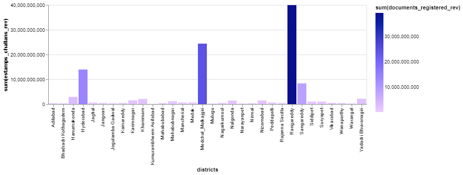
#a=m.groupby(['year','district'])['estamps_challans_cnt'].sum().reset_index()
#b=m.groupby(['year','district'])['documents_registered_cnt'].sum().reset_index()
#b.documents_registered_cnt
#fy=pd.DataFrame({
# "districts": a["district"],
# "estamps_challans_cnt": a.estamps_challans_cnt,
# "documents_registered_cnt": b.documents_registered_cnt,
# "year":a.year
#})#fy["percentage"] = ((fy["documents_registered_cnt"] - fy["estamps_challans_cnt"]) / #fy["estamps_challans_cnt"]) * 100
# Identify years with significant changes
#significant_changes = fy[fy["percentage"].abs() > 10]
#print("Years with significant changes:")
#significant_changesYears with significant changes:
| districts | estamps_challans_cnt | documents_registered_cnt | year | percentage |
|---|---|---|---|---|
| Adilabad | 0 | 9024 | 2019 | inf |
| Bhadradri Kothagudem | 0 | 5960 | 2019 | inf |
| Hanumakonda | 0 | 45134 | 2019 | inf |
| Hyderabad | 0 | 46667 | 2019 | inf |
| Jagtial | 0 | 21889 | 2019 | inf |
| … | … | … | … | … |
| Warangal | 280 | 9142 | 2020 | 3165.000000 |
| Yadadri | Bhuvanagiri | 2487 | 43397 | 2020 |
| Adilabad | 14848 | 12807 | 2021 | -13.745959 |
| Bhadradri | Kothagudem | 2636 | 2275 | 2023 |
| Siddipet | 11600 | 12957 | 2023 | 11.698276 |
3.Is there any alteration of e-Stamp challan count and document registration count pattern since the implementation of e-Stamp challan? If so, what suggestions would you propose to the government? The implementation of the estamp resulting in the massive increase and need to improve its services like adding more documents to it to ease the process of registration
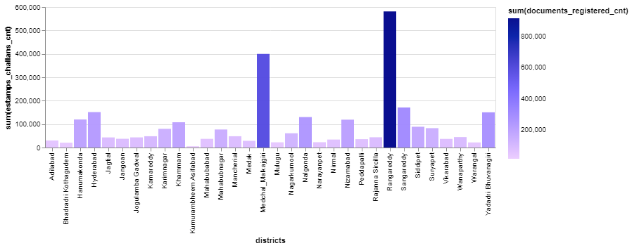
4.Categorize districts into three segments based on their stamp registration revenue generation during the fiscal year 2021 to 2022.
#fy20_21=m[(m["year"]!=2019) & (m["year"]!=2020)]
#district_total_revenue = fy20_21.groupby("district")["total_revenue"].sum()
#low = district_total_revenue.quantile(0.33)
#high = district_total_revenue.quantile(0.66)
#district_total_revenue.head()district
Adilabad 1623944329
Bhadradri Kothagudem 1197512200
Hanumakonda 11198412335
Hyderabad 55765536121
Jagtial 2376689031
Name: total_revenue, dtype: int64
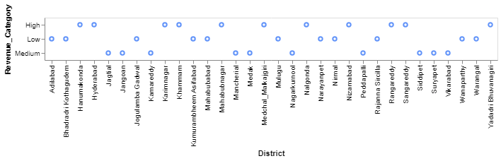
#district_total_revenue_categories=pd.cut(district_total_revenue,bins=[0, low, high, float('inf')],labels=['Low', 'Medium', 'High'])
#districts_categorized = pd.DataFrame({
# "District": district_total_revenue.index,
# "Total_Revenue": district_total_revenue.values,
# "Revenue_Category": district_total_revenue_categories
#})
#districts_categorized.head()| District | Total_Revenue | Revenue_Category | |
|---|---|---|---|
| district | |||
| Adilabad | Adilabad | 1623944329 | Low |
| Bhadradri Kothagudem | Bhadradri Kothagudem | 1197512200 | Low |
| Hanumakonda | Hanumakonda | 11198412335 | High |
| Hyderabad | Hyderabad | 55765536121 | High |
| Jagtial | Jagtial | 2376689031 | Medium |
Transport data analysis
#fact_transport.info()<class ‘pandas.core.frame.DataFrame’>
RangeIndex: 1440 entries, 0 to 1439
Data columns (total 18 columns):
# Column Non-Null Count Dtype
0 dist_code 1440 non-null object
1 month 1440 non-null object
2 fuel_type_petrol 1440 non-null int64
3 fuel_type_diesel 1440 non-null int64
4 fuel_type_electric 1440 non-null int64
5 fuel_type_others 1440 non-null int64
6 vehicleClass_MotorCycle 1440 non-null int64
7 vehicleClass_MotorCar 1440 non-null int64
8 vehicleClass_AutoRickshaw 1440 non-null int64
9 vehicleClass_Agriculture 1440 non-null int64
10 vehicleClass_others 1440 non-null int64
11 seatCapacity_1_to_3 1440 non-null int64
12 seatCapacity_4_to_6 1440 non-null int64
13 seatCapacity_above_6 1440 non-null int64
14 Brand_new_vehicles 1440 non-null int64
15 Pre-owned_vehicles 1440 non-null int64
16 category_Non-Transport 1440 non-null int64
17 category_Transport 1440 non-null int64
dtypes: int64(16), object(2)
#fact_transport.shape(1440, 18)
#m=fact_transport.merge(dim_districts,on="dist_code",how="left")
#m["year"]=pd.DatetimeIndex(m.month).year
#m.head()| dist_code | month | fuel_type_petrol | fuel_type_diesel | fuel_type_electric | fuel_type_others | vehicleClass_MotorCycle | vehicleClass_MotorCar | vehicleClass_AutoRickshaw | vehicleClass_Agriculture | vehicleClass_others | seatCapacity_1_to_3 | seatCapacity_4_to_6 | seatCapacity_above_6 | Brand_new_vehicles | Pre-owned_vehicles | category_Non-Transport | category_Transport | district | year |
|---|---|---|---|---|---|---|---|---|---|---|---|---|---|---|---|---|---|---|---|
| 15_1 | 2019-04-01 | 17910 | 3011 | 76 | 22 | 15308 | 4429 | 0 | 4 | 1278 | 16110 | 4182 | 717 | 19542 | 1477 | 19856 | 1163 | Rangareddy | 2019 |
| 18_2 | 2019-04-01 | 3066 | 306 | 6 | 0 | 2995 | 142 | 49 | 64 | 128 | 3156 | 189 | 33 | 3322 | 56 | 3203 | 175 | Kamareddy | 2019 |
| 20_3 | 2019-04-01 | 1577 | 215 | 0 | 0 | 1546 | 79 | 29 | 21 | 117 | 1683 | 104 | 5 | 1751 | 41 | 1648 | 144 | Rajanna Sircilla | 2019 |
#m.corr()5.Investigate whether there is any correlation between vehicle sales and specific months or seasons in different districts. Are there any months or seasons that consistently show higher or lower sales rate, and if yes, what could be the driving factors? (Consider Fuel-Type category only)
#columns_to_analyze = ['month', 'district', 'fuel_type_petrol', 'fuel_type_diesel', 'fuel_type_electric', 'fuel_type_others']
#data = m[columns_to_analyze].copy()
#correlation_matrix = data.corr()
#print(correlation_matrix) fuel_type_petrol fuel_type_diesel fuel_type_electric \fuel_type_petrol 1.000000 0.892273 0.598413
fuel_type_diesel 0.892273 1.000000 0.471648
fuel_type_electric 0.598413 0.471648 1.000000
fuel_type_others 0.633747 0.495163 0.530573
fuel_type_others fuel_type_petrol 0.633747
fuel_type_diesel 0.495163
fuel_type_electric 0.530573
fuel_type_others 1.000000
#plt.figure(figsize=(10, 8))
#sns.heatmap(correlation_matrix, annot=True, cmap="coolwarm", fmt=".2f")
#plt.title("Correlation Matrix")
#plt.show()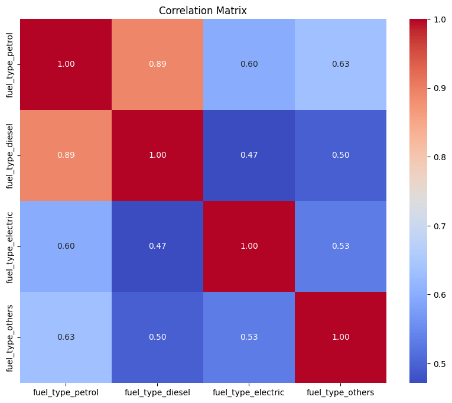
# Group by month and calculate the mean sales for each fuel type
#monthly_sales = data.groupby('month')[['fuel_type_petrol', 'fuel_type_diesel', 'fuel_type_electric', 'fuel_type_others']].mean()
# Create a bar plot
#monthly_sales.plot(kind='bar', figsize=(50, 6))
#plt.title("Average Vehicle Sales by Month")
#plt.xlabel("Month")
#plt.ylabel("Average Sales")
#plt.xticks(rotation=45)
#plt.legend(title='Fuel Type')
#plt.show()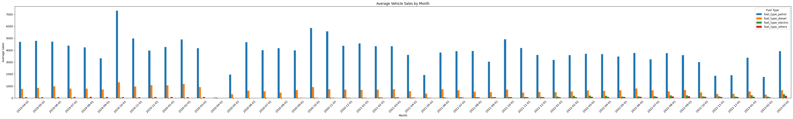
Driving Factors for slow growth in sales in some months Vehicle registrations in Telangana for the year 2020-04-01 reduced drastically due to the COVID-19 pandemic. The lockdown imposed by the government in March 2020 restricted the movement of people and vehicles, which led to a decline in the demand for new vehicles. Additionally, the economic slowdown caused by the pandemic also led to people postponing their plans to buy new vehicles.
According to the Telangana Transport Department, the number of vehicle registrations in the state fell by 56% in April 2020 compared to the same month in the previous year. The decline was even more pronounced in the following months, with registrations falling by 72% in May 2020 and 80% in June 2020.
Here are some other factors that may have contributed to the decline in vehicle registrations in Telangana in 2020:
The increase in the prices of vehicles due to the rise in the cost of raw materials. The shortage of semiconductors, which is a key component in many vehicles. The uncertainty about the future of the economy, which made people hesitant to make major purchases such as a new vehicle.
There are a few possible reasons why vehicle registrations in Telangana drastically reduced in May 2021.
The COVID-19 pandemic was at its peak in India during this time, and many people were staying home to avoid getting sick. This would have led to a decrease in the demand for new vehicles. The Telangana government increased the registration fees for vehicles in April 2021. This would have made it more expensive to buy a new vehicle, which could have also contributed to the decline in registrations. The Indian economy was also struggling during this time, which could have made it difficult for people to afford to buy a new vehicle. It is also possible that there is another factor that caused the decline in vehicle registrations in Telangana in May 2021. However, the reasons mentioned above are the most likely explanations.
Here are some additional details about each of the reasons mentioned above:
The COVID-19 pandemic caused a nationwide lockdown in India in March 2020. The lockdown was gradually lifted in the following months, but many people were still hesitant to go out and about in public. This would have led to a decrease in the demand for transportation, including new vehicles. The Telangana government increased the registration fees for vehicles in April 2021. The increase was as follows: Three-wheelers: from Rs. 600 to Rs. 2,500 Light motor vehicles: from Rs. 600 to Rs. 5,000 Medium goods vehicles: from Rs. 1,000 to Rs. 1,500 Heavy goods vehicles: from Rs. 1,500 to Rs. 2,000 This increase in registration fees would have made it more expensive to buy a new vehicle, which could have contributed to the decline in registrations.
The Indian economy was also struggling during this time due to the COVID-19 pandemic. The unemployment rate rose, and many businesses were forced to close. This would have made it difficult for people to afford to buy a new vehicle.
How does the distribution of vehicles vary by vehicle class (MotorCycle, MotorCar, AutoRickshaw, Agriculture) across different districts? Are there any districts with a predominant preference for a specific vehicle class? Consider FY 2022 for analysis.
#data_fy_2022 = m[m['year'] == 2022][['district', 'vehicleClass_MotorCycle', 'vehicleClass_MotorCar', 'vehicleClass_AutoRickshaw', 'vehicleClass_Agriculture']]
# Group by district and calculate the mean distribution for each vehicle class
#district_vehicle_distribution = data_fy_2022.groupby('district').mean()
#plt.figure(figsize=(12, 8))
#sns.heatmap(district_vehicle_distribution, cmap="Blues", annot=True, fmt=".2f")
#plt.title("Vehicle Class Distribution by District (FY 2022)")
#plt.xlabel("Vehicle Class")
#plt.ylabel("District")
#plt.show()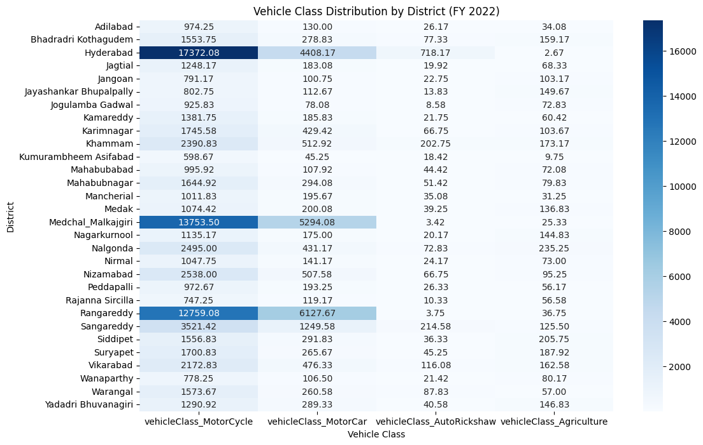
# Find the predominant vehicle class for each district
#predominant_vehicle_class = district_vehicle_distribution.idxmax(axis=1)
#predominant_vehicle_classdistrict
Adilabad vehicleClass_MotorCycle
Bhadradri Kothagudem vehicleClass_MotorCycle
Hyderabad vehicleClass_MotorCycle
Jagtial vehicleClass_MotorCycle
Jangoan vehicleClass_MotorCycle
Jayashankar Bhupalpally vehicleClass_MotorCycle
Jogulamba Gadwal vehicleClass_MotorCycle
Kamareddy vehicleClass_MotorCycle
Karimnagar vehicleClass_MotorCycle
Khammam vehicleClass_MotorCycle
Kumurambheem Asifabad vehicleClass_MotorCycle
Mahabubabad vehicleClass_MotorCycle
Mahabubnagar vehicleClass_MotorCycle
Mancherial vehicleClass_MotorCycle
Medak vehicleClass_MotorCycle
Medchal_Malkajgiri vehicleClass_MotorCycle
Nagarkurnool vehicleClass_MotorCycle
Nalgonda vehicleClass_MotorCycle
Nirmal vehicleClass_MotorCycle
Nizamabad vehicleClass_MotorCycle
Peddapalli vehicleClass_MotorCycle
Rajanna Sircilla vehicleClass_MotorCycle
Rangareddy vehicleClass_MotorCycle
Sangareddy vehicleClass_MotorCycle
Siddipet vehicleClass_MotorCycle
Suryapet vehicleClass_MotorCycle
Vikarabad vehicleClass_MotorCycle
Wanaparthy vehicleClass_MotorCycle
Warangal vehicleClass_MotorCycle
Yadadri Bhuvanagiri vehicleClass_MotorCycle
7.List down the top 3 and bottom 3 districts that have shown the highest and lowest vehicle sales growth during FY 2022 compared to FY 2021? (Consider and compare categories: Petrol, Diesel and Electric)
#df=m
# Calculate vehicle sales for each district and fuel type in FY 2021 and FY 2022
#df['sales_petrol_fy2021'] = df['fuel_type_petrol'] * df['year'].apply(lambda x: 1 if x == 2021 else 0)
#df['sales_petrol_fy2022'] = df['fuel_type_petrol'] * df['year'].apply(lambda x: 1 if x == 2022 else 0)
#df['sales_diesel_fy2021'] = df['fuel_type_diesel'] * df['year'].apply(lambda x: 1 if x == 2021 else 0)
#df['sales_diesel_fy2022'] = df['fuel_type_diesel'] * df['year'].apply(lambda x: 1 if x == 2022 else 0)
#df['sales_electric_fy2021'] = df['fuel_type_electric'] * df['year'].apply(lambda x: 1 if x == 2021 else 0)
#df['sales_electric_fy2022'] = df['fuel_type_electric'] * df['year'].apply(lambda x: 1 if x == 2022 else 0)
# Group by district and calculate total sales for each fuel type and year
#grouped = df.groupby('district').agg(
# sales_petrol_fy2021=('sales_petrol_fy2021', 'sum'),
# sales_petrol_fy2022=('sales_petrol_fy2022', 'sum'),
# sales_diesel_fy2021=('sales_diesel_fy2021', 'sum'),
# sales_diesel_fy2022=('sales_diesel_fy2022', 'sum'),
# sales_electric_fy2021=('sales_electric_fy2021', 'sum'),
# sales_electric_fy2022=('sales_electric_fy2022', 'sum')
#)
# Calculate growth rate for each fuel type
#grouped['growth_petrol'] = (grouped['sales_petrol_fy2022'] - grouped['sales_petrol_fy2021']) / grouped['sales_petrol_fy2021']
#grouped['growth_diesel'] = (grouped['sales_diesel_fy2022'] - grouped['sales_diesel_fy2021']) / grouped['sales_diesel_fy2021']
#grouped['growth_electric'] = (grouped['sales_electric_fy2022'] - grouped['sales_electric_fy2021']) / grouped['sales_electric_fy2021']
#grouped.head()| sales_petrol_fy2021 | sales_petrol_fy2022 | sales_diesel_fy2021 | sales_diesel_fy2022 | sales_electric_fy2021 | sales_electric_fy2022 | growth_petrol | growth_diesel | |
|---|---|---|---|---|---|---|---|---|
| district | ||||||||
| Adilabad | 17888 | 12612 | 2280 | 2539 | 171 | 341 | -0.294946 | 0.113596 |
| Bhadradri | Kothagudem | 30750 | 21190 | 6330 | 5569 | 30 | 238 | -0.310894 |
| Hyderabad | 238164 | 234151 | 20783 | 21605 | 5911 | 18276 | -0.016850 | 0.039552 |
| Jagtial | 28259 | 16369 | 3610 | 2264 | 251 | 593 | -0.420751 | -0.372853 |
| Jangoan | 14714 | 10420 | 3726 | 2473 | 40 | 168 | -0.291831 | -0.336286 |
# Get top 3 and bottom 3 districts for each fuel type based on growth rate
#top_petrol = grouped.sort_values('growth_petrol', ascending=False).head(3)
#bottom_petrol = grouped.sort_values('growth_petrol').head(3)
#top_diesel = grouped.sort_values('growth_diesel', ascending=False).head(3)
#bottom_diesel = grouped.sort_values('growth_diesel').head(3)
#top_electric = grouped.sort_values('growth_electric', ascending=False).head(3)
#bottom_electric = grouped.sort_values('growth_electric').head(3)#print("Top 3 districts with highest petrol sales growth:")
#print(top_petrol[['growth_petrol']])
#print("\nBottom 3 districts with lowest petrol sales growth:")
#print(bottom_petrol[['growth_petrol']])
#print("\nTop 3 districts with highest diesel sales growth:")
#print(top_diesel[['growth_diesel']])
#print("\nBottom 3 districts with lowest diesel sales growth:")
#print(bottom_diesel[['growth_diesel']])
#print("\nTop 3 districts with highest electric sales growth:")
#print(top_electric[['growth_electric']])
#print("\nBottom 3 districts with lowest electric sales growth:")
#print(bottom_electric[['growth_electric']])Top 3 districts with highest petrol sales growth:
| growth_petrol | |
|---|---|
| district | |
| Rangareddy | 0.061650 |
| Hyderabad | -0.016850 |
| Medchal_Malkajgiri | -0.044339 |
Bottom 3 districts with lowest petrol sales growth:
| growth_petrol | |
|---|---|
| district | |
| Warangal | -0.547441 |
| Jagtial | -0.420751 |
| Jayashankar Bhupalpally | -0.391166 |
Top 3 districts with highest diesel sales growth:
| growth_diesel | |
|---|---|
| district | |
| Karimnagar | 1.101447 |
| Rangareddy | 0.207711 |
| Sangareddy | 0.137153 |
Bottom 3 districts with lowest diesel sales growth:
| growth_diesel | |
|---|---|
| district | |
| Warangal | -0.612469 |
| Jagtial | -0.372853 |
| Mahabubabad | -0.350363 |
Top 3 districts with highest electric sales growth:
| growth_electric | |
|---|---|
| district | |
| Bhadradri Kothagudem | 6.933333 |
| Khammam | 6.070423 |
| Mahabubabad | 4.857143 |
Bottom 3 districts with lowest electric sales growth:
| growth_electric | |
|---|---|
| district | |
| Rajanna Sircilla | 0.193252 |
| Mahabubnagar | 0.211765 |
| Wanaparthy | 0.697917 |
Ts-Ipass Data Analysis
#from pandas.core.indexes.period import DatetimeIndex
#m=fact_TS_ipass.merge(dim_districts,on="dist_code",how="left")
#m["year"]=DatetimeIndex(m.month).year
#m.info()<class ‘pandas.core.frame.DataFrame’>
Int64Index: 5753 entries, 0 to 5752
Data columns (total 7 columns):
# Column Non-Null Count Dtype
0 dist_code 5753 non-null object
1 month 5753 non-null object
2 sector 5753 non-null object
3 investment in cr 5753 non-null float64
4 number_of_employees 5753 non-null int64
5 district 5753 non-null object
6 year 5753 non-null int64
dtypes: float64(1), int64(2), object(4)
8.List down the top 5 sectors that have witnessed the most significant investments in FY 2022.
#fy22=m[(m["year"]==2022)]
#a=fy22.groupby(['sector'])['investment in cr'].sum().reset_index()
#a.head()| sector | investment in cr |
|---|---|
| Agro based incl Cold Storages | 1033.2048 |
| Automobile | 305.8881 |
| Beverages | 1848.1920 |
| Cement, Cement & Concrete Products, Fly Ash Br… | 1066.1876 |
| Electrical and Electronic Products | 318.9721 |
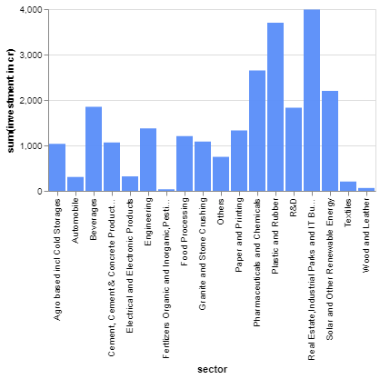
9.List down the top 3 districts that have attracted the most significant sector investments during FY 2019 to 2022? What factors could have led to the substantial investments in these particular districts?
#fy19_22=m[(m["year"]!=2023)]
#a=fy19_22.groupby(["district"])["investment in cr"].sum().reset_index()
#b=a.sort_values("investment in cr",ascending=False).head(3)
#b| district | investment in cr |
|---|---|
| Rangareddy | 40984.2759 |
| Medchal_Malkajgiri | 9987.2529 |
| Sangareddy | 8955.4081 |
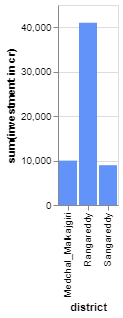
10.Is there any relationship between district investments, vehicles sales and stamps revenue within the same district between FY 2021 and 2022?
#m1=fact_stamps[["dist_code","estamps_challans_rev"]]
#m2=fact_transport
#m3=fact_TS_ipass[['dist_code','investment in cr']]
#merged_df = pd.merge(m1,m2, on=['dist_code'], how='inner')
#merged_df = pd.merge(merged_df,m3, on=['dist_code'], how='inner')
#merged_df["year"]=DatetimeIndex(merged_df.month).year
#merged_df.shape(12457632, 21)
#fy_2021_2022 = merged_df[(merged_df['year'] == 2021) | (merged_df['year'] == 2022)]
# Calculate correlations, trends, or descriptive statistics
#correlation_matrix = fy_2021_2022[['investment in cr', 'vehicleClass_MotorCar', 'estamps_challans_rev']].corr()
# Print correlation matrix or perform other analysis
#print(correlation_matrix)| investment in cr | vehicleClass_MotorCar | |
|---|---|---|
| investment in cr | 1.000000 | 0.070305 |
| vehicleClass_MotorCar | 0.070305 | 1.000000 |
| estamps_challans_rev | 0.058351 | 0.648972 |
| estamps_challans_rev | |
|---|---|
| investment in cr | 0.058351 |
| vehicleClass_MotorCar | 0.648972 |
| estamps_challans_rev | 1.000000 |
#plt.figure(figsize=(10, 8))
#sns.heatmap(correlation_matrix, annot=True, cmap="coolwarm", fmt=".2f")
#plt.title("Correlation Matrix")
#plt.show()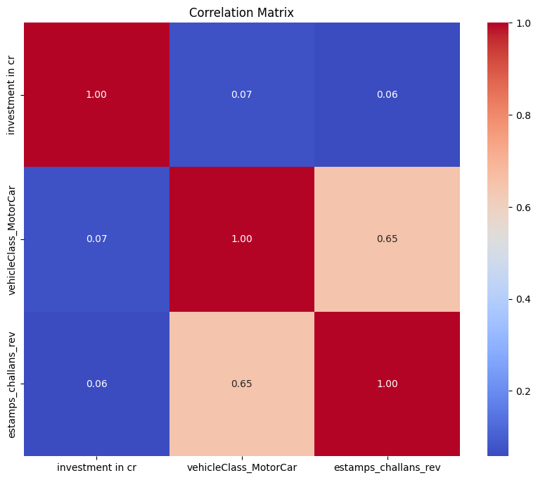
11.Are there any particular sectors that have shown substantial investment in multiple districts between FY 2021 and 2022?
#fy21_22 = m[(m['year'] == 2021) | (m['year'] == 2022)]
#fy21_22.head()| dist_code | month sector | investment | in cr | number_of_employees | district | year | |
|---|---|---|---|---|---|---|---|
| 2381 | 15_2 | 01-01-2021 | Granite and Stone Crushing | 0.2500 | 5 | Medchal_Malkajgiri | 2021 |
| 2382 | 20_1 | 01-01-2021 | Agro based incl Cold Storages | 0.8100 | 28 | Karimnagar | 2021 |
| 2383 | 20_3 | 01-01-2021 | Agro based incl Cold Storages | 1.7250 | 63 | Rajanna Sircilla | 2021 |
| 2384 | 19_1 | 01-01-2021 | Cement, Cement & Concrete Products, Fly Ash Br… | 0.0700 | 5 | Adilabad | 2021 |
| 2385 | 20_2 | 01-01-2021 | Agro based incl Cold Storages | 2.5765 | 60 | Jagtial | 2021 |
#grouped = fy21_22.groupby(['sector', 'district'])['investment in cr'].sum()
#substantial_investments = grouped[grouped > 100]
# Reset index to turn the groupby result into a DataFrame
#substantial_investments_df = substantial_investments.reset_index()
#substantial_investments_df.head()| sector | district | investment | in cr | |
|---|---|---|---|---|
| 0 | Agro based incl Cold Storages | Medchal_Malkajgiri | 358.2581 | |
| 1 | Agro based incl Cold Storages | Siddipet | 572.0519 | |
| 2 | Automobile | Rangareddy | 275.4781 | |
| 3 | Beverages | Narayanpet | 1455.0000 | |
| 4 | Beverages | Sangareddy | 326.4069 |
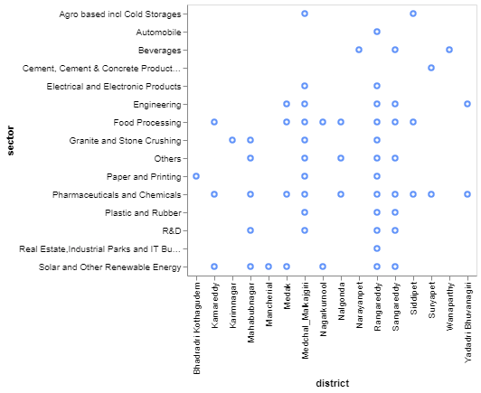 12.Can we identify any seasonal patterns or cyclicality in the investment trends for specific sectors? Do certain sectors experience higher investments during particular months?
#grouped = fact_TS_ipass.groupby(['sector', 'month'])['investment in cr'].mean()
# Reset index to turn the groupby result into a DataFrame
#investment_by_sector_month = grouped.reset_index()
# Create a pivot table for visualization
#pivot_table = investment_by_sector_month.pivot_table(index='month', columns='sector', values='investment in cr', aggfunc='mean')#plt.figure(figsize=(50, 20))
#sns.heatmap(pivot_table, cmap='YlGnBu', annot=True, fmt=".2f")
#plt.title('Investment Trends by Sector and Month')
#plt.xlabel('Sector')
#plt.ylabel('Month')
#plt.xticks(rotation=45, ha='right')
#plt.tight_layout()
#plt.show()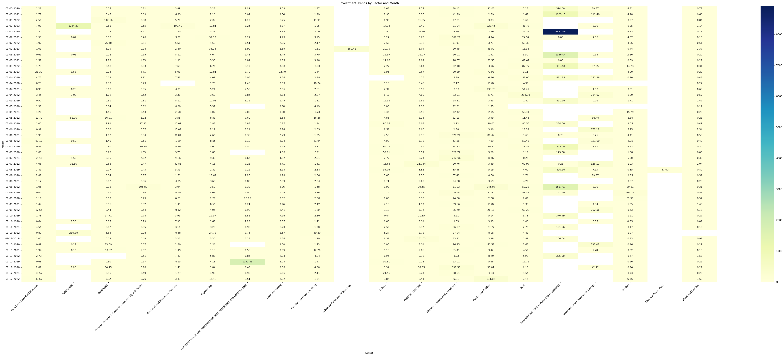
The increase in sectors that had increased in particular months are
1.Fertilizers in 01-12-2019
2.Automobile in 01-01-2023
3.Real Estate in 01-01-2022
Maximum the real estate is the happen to see a seasonal investment for every year with increase in investment every year
Secondary Research: (Need additional research and get additional data)
1.What are the top 5 districts to buy commercial properties in Telangana? Justify your answer.
#a=["Real Estate, Industrial Parks and IT Buildings","Industrial Parks and IT Buildings","Agro based incl Cold Storages"]
#commercial_data = m[m['sector'].isin(a)]
# Group data by district and calculate the total investments
#district_investments = commercial_data.groupby('district')['investment in cr'].sum()
#district_investmentsdistrict
Adilabad 2.2500
Bhadradri Kothagudem 8.6496
Hanumakonda 0.6700
Hyderabad 0.1150
Jagtial 34.1134
Jangoan 17.2365
Jayashankar Bhupalpally 1.0200
Jogulamba Gadwal 3.7085
Kamareddy 39.7736
Karimnagar 29.2580
Khammam 146.7360
Kumurambheem Asifabad 0.0500
Mahabubabad 21.7659
Mahabubnagar 70.4528
Mancherial 1.7825
Medak 73.9177
Medchal_Malkajgiri 450.3329
Mulugu 0.8218
Nagarkurnool 23.5549
Nalgonda 25.0514
Narayanpet 62.9028
Nirmal 24.5042
Nizamabad 45.1248
Peddapalli 10.2509
Rajanna Sircilla 28.3388
Rangareddy 357.3141
Sangareddy 76.9769
Siddipet 734.0076
Suryapet 4.6157
Vikarabad 12.9320
Wanaparthy 8.7885
Warangal 34.7529
Yadadri Bhuvanagiri 29.1078
#top_districts = district_investments.sort_values(ascending=False).head(5)district
Siddipet 734.0076
Medchal_Malkajgiri 450.3329
Rangareddy 357.3141
Khammam 146.7360
Sangareddy 76.9769
2.What significant policies or initiatives were put into effect to enhance economic growth, investments, and employment in Telangana by the current government? Can we quantify the impact of these policies using available data?
Industrial Policy Framework: The Telangana government introduced an industrial policy that aims to promote industrialization and attract investments across various sectors. This policy includes incentives and concessions for industries setting up in the state.
TS-iPASS (Industrial Project Approval and Self-Certification System): TS-iPASS is an initiative to provide speedy and transparent approvals for setting up industries in Telangana. It simplifies the approval process and aims to create a business-friendly environment.
T-Hub: T-Hub is a start up incubator and accelerator that fosters innovation and entrepreneurship. It provides a platform for start ups to collaborate, learn, and scale their businesses.
Mission Bhagiratha: This project focuses on providing safe drinking water to every household in Telangana. Access to clean water infrastructure can improve health and living conditions, indirectly supporting economic growth.
Rythu Bandhu Scheme: This scheme provides financial assistance to farmers in the form of investment support before the crop season. It aims to ensure farmers’ economic stability and enhance agricultural productivity.
Telangana State Innovation Cell (TSIC): TSIC promotes innovation and research in various sectors. It supports start ups, provides training, and encourages the development of innovative solutions.
These policies helped the investments raising and clearance of industry establishment in the state.
As the data of the TS-iPASS shows the steady growth of investments increased especially in the real estate , Pharmaceuticals, solar and renewable energy,etc.
3.Provide top 5 Insights & 5 recommendations to Telangana government for sustained growth in the next 5 years based on your analysis.
5 Insights
1.The investments in the state in constantly increasing
2.Utilization of technology is increasing in every sector
3.The people buying power is constantly increasing
4.Companies are more interested in establishing their companies
5.Investment in R&D is not increasing variably and needs improvement.
Recommendation 1: Support Local Businesses
Promote local entrepreneurship and small businesses by providing incentives, access to capital, and mentor ship programs. Encourage the growth of local industries to ensure that the benefits of increased buying power stay within the state.
Recommendation 2: Ease of Doing Business
Continue to improve the ease of doing business in the state by reducing bureaucratic red tape, simplifying regulations, and streamlining permit processes. Creating a business-friendly environment will attract more companies and foster economic growth.
Recommendation 3: Research and Innovation Hubs
Establish research and innovation hubs in collaboration with academic institutions and industry partners. Provide grants, tax incentives, and resources to encourage research and development across various sectors. Invest in innovation to drive long-term economic growth.
Recommendation 4: Sustainable Agriculture Practices
Promote and subsidize the adoption of sustainable and organic farming practices. Encourage farmers to use organic fertilizers, reduce chemical pesticide use, and implement water-saving techniques. This will enhance food production while safeguarding the environment.
Recommendation 5: Infrastructure Development
Invest in infrastructure development, including transportation, energy, and logistics. Improved infrastructure can reduce costs for businesses, enhance connectivity, and facilitate the movement of goods and services, ultimately boosting economic growth.